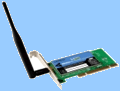

Безжичните технологии стават все по-популярна алтернатива на мрежите.  Въпреки че методите за безжично предаване често пъти са много по-бавни от кабелните връзки, те имат значителни преимущества при конкретни ситуации. Същите основни концепции, които засягат безжичните WAN мрежи, се отнасят и за безжичните LAN мрежи.
Въпреки че методите за безжично предаване често пъти са много по-бавни от кабелните връзки, те имат значителни преимущества при конкретни ситуации. Същите основни концепции, които засягат безжичните WAN мрежи, се отнасят и за безжичните LAN мрежи.
Обикновено една „безжична" мрежа не се изгражда съвсем без нито един кабел, но включва безжични устройства, които комуникират с традиционна кабелна мрежа.
Приемопредавателите, наричани точки за достъп (access points), се използват за предаване и приемане на данни между безжичното устройство или устройства и кабелната мрежа, както е показано на схемата.
Безжичната LAN комуникация е категория, включваща най-различни методи за предаване:
- Чрез лазер
- С инфрачервени лъчи
- С помощта на радио честоти

Лазер
Лазер (laser) е съкращение от „light amplification by stimulated emission of radiation" (усилване на светлината чрез стимулирана емисия на лъчение, или още оптичен квантов генератор). Лазерът излъчва поле от кохерентна електромагнитна енергия, в което всички вълни са с еднаква честота и са подредени във фаза. Фазата е част от пълен цикъл, която е изминала и се измерва от конкретна отправна точка. Различните типове лазери произвеждат лъчи с различна дължина на вълната.
ЗАБЕЛЕЖКА Повечето хора си мислят за лазерната светлина като за „червена точка", но аргоновите лазери (наречени така заради използването на аргонов газ като среда за лазера) произвеждат синя или зелена светлина. Криптоновите лазери (използващи едноименен газ) произвеждат червена светлина, а лазерите със „смесен газ" комбинират двата газа, произвеждайки едновременно червена, зелена и синя светлина. Резултатът от това е бял лъч.
Лазерите се използват за много цели - като се започне от евтини посочващи устройства и се стигне до високо прецизни мерници за оръжия, принтери, електронни игри, дистанционни управления, хирургически манипулации и мрежови комуникации.
Лазерните мрежи работят чрез използване на импулси лазерна светлина, с които се представя сигналът. Лазерът е технология, изискваща „пряка видимост", т.е. между предаващите и приемащите устройства не трябва да има никакви препятствия. Необходимостта от гарантирана пряка видимост е недостатък на базираните на лазер безжични комуникации.

Инфрачервени лъчи
Инфрачервената (Infrared - Ir) технология е позната на много хора, тъй като тя се използва в дистанционните устройства за телевизори, видеокасетофони, аудио уредби и т.н. Тя може да се използва и за изграждане на безжични мрежи, като сигналът се пренася с помощта на лъчи в инфрачервения спектър. За целта се използват много високи честоти, намиращи се в диапазона точно под видимия спектър на светлината.
Стандартите за Ir хардуера и софтуера се задават от организацията Infrared Data Association (IrDA). IrDA-съвместимите устройства са проектирани така, че когато даден потребител прекрати инфрачервената връзка, тя да се възстановява при повторното навлизане на устройство в IR обхвата.

Ir мрежите изискват наличие на приемопредавател и в двете комуникиращи устройства, като е възможно да изисква и софтуер за синхронизация. Някои операционни системи, като Windows XP и 2000, притежават вградена Ir поддръжка. Скоростта на предаване варира от 4 Mbps до 16 Mbps.
Инфрачервените вълни, подобно на лазера, са технология с пряка видимост.
Недостатъците при IR технологията за мрежи включват следното:
- Ограничение на обхвата - най-често срещаният обхват е по-малък от 30 метра.
- Уязвимост - околната светлина може да причини смущения.

Радиовълни
Знаем, че телефонните линии, които първоначално се използваха за предаване на глас, могат да предават и данни. По същия начин радиовълните - среда, която асоциираме предимно с радиопредавания - могат да се използват за предаване на сигнали, носещи данни. Използването на радиоканалите за връзка между устройствата, макар че не е ново като изобретение, едва напоследък еволюира значително, особено благодарение на широкото разпространение на Internet, локалните и WAN мрежи, свързващи много хора, позволяващи да си разменят глас, видео и данни помежду си, и то с осезаемо високи скорости. Тласък за развитието именно на безжичните устройства е дала необходимостта от по-голяма свобода и удобство при изграждането на мрежи, необходимостта от лесното включване на все по-бързо увеличаващия се брой на мобилни абонати, не желаещи да търсят специални точки за включване към мрежата, а глобално погледнато - потребността на съвременния човек от модерни бързодействащи и високоскоростни комуникации. Според изчисленията на аналитиците, през следващата година в света ще има над 1 милиард мобилни устройства, оборудвани с безжична връзка.
- Стандарт IEEE 802.11
Комитетът по стандарти на организацията IEEE (Institute of Electrical and Electronics Engineers), IEEE 802, сформира през 1990 година работната група за изработването на стандарт за безжични локални мрежи 802.11. Задачата на тази работна група бе да разработи всеобщ стандарт за радиопредаване и за безжични локални мрежи, които ще работят на честота 2.4 GHz със скорост на предаване на данни 1 и 2 Mbps (Megabits-per-second). Работата по създаването на стандарта бе завършена през 1997 година, когато през юни месец бе ратифицирана първата официална спецификация на 802.11. Стандартът IEEE 802.11 бе първият стандарт за безжични мрежи (WLAN, Wireless Local Area Network), приет от независима международна стандартизираща организация, разработила, освен него, и множество други спецификации и стандарти за мрежовите връзки по кабел.
Стандартът към момента предлага няколко варианта: 802.11a, 802.11b, 802.11g, 802.11n+.
802.11а е първото комерсиално предложение, което през 1999 г. привлича вниманието на широката публика. Стандартно работи на честоти около 5 GHz (5,15 до 5,8 GHz) и предлага максимална скорост на свързване 54 Mbit/s, което за времето си е било една много сериозна заявка. В случая достигането на близка до максималната скорост на свързване е изисквало почти винаги наличие на пряка видимост между устройствата. Това е създавало големи проблеми, като при липса на видимост се е получавала сериозна загуба на производителност.
802.11b доведе до преодоляване на някои от недостатъците на стандарта 802.11а и поради редица предимства и използването на честотата 2,4 GHz, b версията се превърна в масово предпочитан вариант въпреки доста по-ниската си максимална скорост от 11 Mbit/s.
През недалечната 2003 г. обаче бе ратифициран нов стандарт – 802.11g. Той предложи скоростите на 802.11а и предимствата на 802.11b, наред със съвместимост за работа в обща мрежа с 802.11b продукти (но наличието на такива намаляваха драстично възможностите на 802.11g хардуера). Така да се каже, g е стандартът, който реално повиши с много интереса към Wi-Fi свързаността. Въпреки всичко тези 54 Mbit/s максимална теоретична (и по-ниска реална) скорост са доста ниски за много от потребителите, които разчитат поне на възможностите на 100 Mbit/s LAN мрежа. Затова през 2004 г. бе стартиран нов проект с цел разработване на много по-сериозен стандарт за безжично свързване с име 802.11n. Предполага се, че 802.11n ще успее да предложи максимална теоретична скорост от почти 600 Mbit/s и средна реално постижима от около 200 до 300 Mbit/s, което е доста сериозно за подобен тип свързаност. Към момента обаче 802.11n е в draft вариант и въпреки че се предлага на пазара, официално обявена версия се предполага да бъде обявена през 2009 г..
Стандартът IEEE 802.11 определя дава режима на работа на безжичната мрежа - режим точка-точка (Ad-hoc) и режим клиент/сървър, наричан още режим на инфраструктурата (infrastructure mode). По този начин са озаглавени режимите във повечето програмни пакети, управляващи Access Point.
- Първият режим, точка-точка, наричан още IBSS - независим набор от услуги , представлява елементарна като структура мрежа, в която отделните станции се свързват една със друга пряко, без да е необходима точка за достъп. Разбира се, при това положение съществуват някои ограничения от типа на максималния брой устройства, които могат да изграждат такава мрежа, което зависи от типа на безжичното мрежово оборудване и от спецификациите на 802.11.
- Режимът клиент/сървър предполага използването на поне една точка за достъп, представляваща специализирано устройство, която да е включена към кабелна Ethernet мрежа, и определен, често ограничен, брой крайни безжични работни станции. Този тип конфигурация се нарича основен набор от услуги (BSS - Basic Service Set), като при наличието на два или повече BSS се формира разширен набор от услуги (ESS - Extended Service Set). Очевидно е предимството на режима клиент/сървър, когато безжичната мрежова станция може да получи достъп до локално мрежово устройство или специфична функция, свързано към стационарната мрежа (например, към мрежов принтер, скенер или Интернет).
Съвместимостта между продуктите, произведени от различни производители, се гарантира от независима организация, наречена Wireless Ethernet Compatibility Alliance (WECA, http://www.weca.net), създадена от лидерите в производството на мрежови устройства, между които са Cisco , Lucent , 3Com , IBM , Intel, Apple, Compaq, Dell , Fujitsu , Siemens , Sony , AMD (над 80 компании), през същата 1999 година.

- Wi-Fi устройства
Терминът Wi-Fi (уайфай) е търговско наименование на, може би, най разпространената технология за безжична връзка, която покрива стандартите IEEE 802.11 (802.11n, 802.11b, 802.11g и 802.11a).
Терминът "Wi-Fi" по принцип е съкращение от "Wireless Fidelity", което е пряка аналогия с популярния термин от аудио техниката "High Fidelity" или "Hi-Fi. И ,макар че "Wireless Fidelity" понякога се използва даже и от самия Wi-Fi Alliance, фактически Wi-Fi не означава нищо. Това е просто "една закачка с Hi-Fi, така като логото е в стила на инг-янг ".
Най-често използваните Wi-Fi устройства са:
-
Access Point (точки за достъп) – устройства,
 които, най-общо казано, позволяват връзката на LAN системи с Wireless системи.
които, най-общо казано, позволяват връзката на LAN системи с Wireless системи. - Wi-Fi рутери – представляват обединяване на Access Point и интернет рутер, като така позволяват да бъде разпределена LAN интернет връзка между няколко безжични системи, както и да бъде изградена вътрешна мрежа между тях.
- Усилвател – позволява да бъде усилена връзката между две или повече Wi-Fi устройства.
- Wi-Fi PCI, PCMCIA, USB2.0 карти – мрежови карти за инсталиране или включване към система, която искате да оборудвате с безжични възможности. В зависимост от вида на компютъра варира и самата карта. Голям интерес представляват USB2.0-базираните продукти, които позволяват бързо и лесно преместване от една машина на друга, както и голяма мобилност при използването им на лаптоп система .

Други безжични технологии: Bluetooth
Технологията Bluetooth (на английски - син зъб) е наречена на името на краля на Дания и Норвегия от края на 10-ти век Харалд Синия зъб, който е известен с това, че успял да обедини воюващи дотогава племена от Дания (включваща днес шведската област Скания, където е била създадена технологията Bluetooth), и от Норвегия. По подобен начин Bluetooth е предназначен да „обедини” (да направи съвместими) различни технологии, каквито са например тези на компютрите и мобилните телефони. Този термин все по-често се среща в материалите, посветени на компютрите. Става дума за технология, чрез която се изграждат безжични мрежи, в които могат да участват не само компютри, но и други устройства - например мобилни телефони
Конструктивно, най-грубо погледнато, Bluetooth-устройството представлява хардуерен модул (обособен или интегриран, изпълняващ функциите на радиопредавател/приемник под управлението на драйвер. Приемо-предавателят (ПП) според спецификациите трябва да работи в честотния диапазон от 2400 - 2483,5 MHz, който е освободен в повечето държави и не изисква лицензиране. Съществуват държави като Франция и Япония, в които част от този диапазон се използва и за други цели, там диапазонът за тези устройства е стеснен до 2445-2475 MHz (Испания), 2446,5-2483,5 (Франция).
Разстояние, на което могат да се отдалечат две устройства  Bluetooth, е около 20-30 метра, но се работи по удължаването му. В замяна на това, няколко Bluetooth устройства могат да се свържат в мрежа и през стена (стени) или на няколко етажа в една сграда, без да има необходимост от пряка видимост или външна антена.
Bluetooth, е около 20-30 метра, но се работи по удължаването му. В замяна на това, няколко Bluetooth устройства могат да се свържат в мрежа и през стена (стени) или на няколко етажа в една сграда, без да има необходимост от пряка видимост или външна антена.
Bluetooth има и друга, отличваща го от останалите технологии особеност: различните Bluetooth устройства влизат в контакт едно с друго автоматично, веднага след като попаднат в обсега на ПП, а за установяването на връзката, аутентификацията и др. се грижи програмното осигуряване.
Едно от големите предимства на Bluetooth е, че устройството, поддържащо стандарта, влизайки в обхват, може да установи връзка не с едно, а с множество други, поддържащи тази технология, като не е задължително те да си взаимодействат активно.